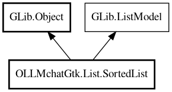

SortedList
Object Hierarchy:

Description:
public class SortedList<T> : Object, ListModel
A sorted and filtered list model for any type of object.
Implements GLib.ListModel directly with sorting and filtering. Provides a method to find the position of an object in the sorted list.
To create a filter that matches all items (no filtering), use: `new Gtk.CustomFilter((item) => { return true; })`
Since:
1.0
Content:
Properties:
Creation methods:
- public SortedList (ListModel source_model, Sorter sorter, Filter filter)
Constructor.
Methods:
- public uint find_position (T item)
Find the position of an object in the sorted list.
- public Object? get_item (uint position)
ListModel interface implementation: Get item at position.
- public Type get_item_type ()
ListModel interface implementation: Get the item type.
- public T get_item_typed (uint position)
Get the item at the specified position as the generic type.
- public uint get_n_items ()
ListModel interface implementation: Get the number of items.
Inherited Members:
All known members inherited from class GLib.Object
- @get
- @new
- @ref
- @set
- add_toggle_ref
- add_weak_pointer
- bind_property
- connect
- constructed
- disconnect
- dispose
- dup_data
- dup_qdata
- force_floating
- freeze_notify
- get_class
- get_data
- get_property
- get_qdata
- get_type
- getv
- interface_find_property
- interface_install_property
- interface_list_properties
- is_floating
- new_valist
- new_with_properties
- newv
- notify
- notify_property
- ref_count
- ref_sink
- remove_toggle_ref
- remove_weak_pointer
- replace_data
- replace_qdata
- set_data
- set_data_full
- set_property
- set_qdata
- set_qdata_full
- set_valist
- setv
- steal_data
- steal_qdata
- thaw_notify
- unref
- watch_closure
- weak_ref
- weak_unref
All known members inherited from interface GLib.ListModel